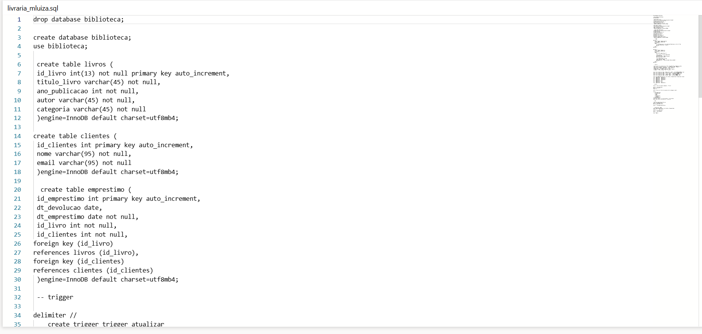

Portfolio
Primeiro Ano
Segundo Ano
Terceiro Ano
Programação de Aplicativos Mobile I
Aprendemos a usar a ferramenta Power Apps, uma ferramenta low code da Microsoft. Realizamos pequenas
aplicações, como agendas e calculadoras.
Banco de Dados II
Desenvolvemos projetos no MySql Workbench, fazendo consultas e bancos de dados fictícios. Aprendemos
temas
como trigger, case, joins e reforçamos os conceitos aprendidos em banco de dados I.

Desenvolvimento de Sistemas
Tivemos o C# como linguagem principal, trabalhando principalmente com o windows forms ao longo do ano.
Focamos nos últimos meses em fazer um sistema de controle de estoque, que funcionasse com login, edição e
cadastro de produtos.
Programação Web II
Aprofundamos os conceitos de HTML e CSS, e aprendemos PHP. Tivemos atividades práticas de criação de
sites dinâmicos e estilizados. Também fizemos nosso primeiro CRUD em PHP, e aprendemos a usar o XAMPP
para rodar nossos projetos localmente.